← 返回阅读库 · 原论文目录
论文讲解阅读文档 · 表征学习 · v183
TransRank: Self-supervised Video Representation Learning via Ranking-based Transformation Recognition
视频时长 00:14:27；讲解文字 6,640 字符；提取讲解画面 22 张。按视频原顺序阅读，每段文字保留时间戳。
文字来自整段视频的自动语音转写，按自然停顿分段，并与 PPT / 论文页面 / 演示画面对齐。未将讲解压缩为摘要；术语、数字和口述公式请结合画面及原论文核对。 阅读稿已校正规范部分明确术语误识别；原始逐字稿和每处修改记录另行保留。
讲解画面为源视频截图（640×360），不是可编辑 PPT 文件。全片按每秒 2 帧扫描内容变化，逐步展开页保留；连续动画保留代表画面。清晰度受源视频限制。
下载完整资料包 · 含离线 HTML、PDF、Word、全部 PPT 画面和字幕。
原论文与材料
TransRank: Self-supervised Video Representation Learning via Ranking-based Transformation Recognition · 下载完整 PDF（14 页）
按时间阅读
00:00:00–00:00:11 · 画面 001
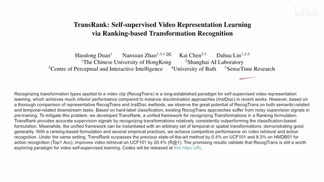
00:00:00–00:00:11 · 画面 001大家好,今天我们来快速水一篇论文 TransrankSelf-supervised video representation learning via ranking-based transformation recognition 下面我们直接来看首先一个背景
00:00:11–00:00:31 · 画面 002
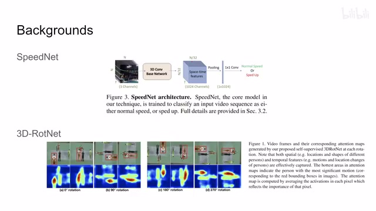
00:00:11–00:00:31 · 画面 002我们知道在做这个 video 的 self-supervised learning 的时候呢我们经常通过一些辅助的这个任务来帮助我们学到好的 representation 比如说这个 speednet 让我们有一个 classifier 来判断这个视频有没有被加速这样让我们的模型能够更好的理解这个视频在时间上的这个属性还有这个 RotNet 这个从 2D 变到 3D 道理也是一样的都是把我们的这个视频旋转过来然后呢让我们的 classifier 去判断
00:00:31–00:00:32 · 画面 003
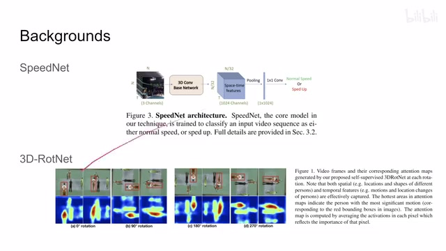
00:00:31–00:00:32 · 画面 00300:00:32–00:00:42 · 画面 004
00:00:32–00:00:42 · 画面 00400:00:42–00:01:02 · 画面 005
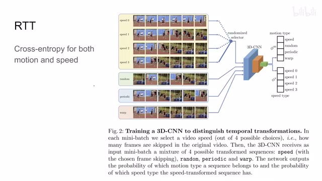
00:00:42–00:01:02 · 画面 005那么还有很多的例子呢在我们上一篇介绍的这个 recognizing temporal transformation 里面也都介绍了比如说这个速度啊这个 random permutation 啊对吧这个正方倒放这些东西啊等等也是用 classifier 来判断我们究竟使用了哪一种来促进我们的这个 encoder 对模型的理解那么以上的这些方法呢在本文呢作者认为它叫做 recognizing transformation 这是一类的方法核心的思路就是我对视频施加一个 transformation
00:01:02–00:02:26 · 画面 006
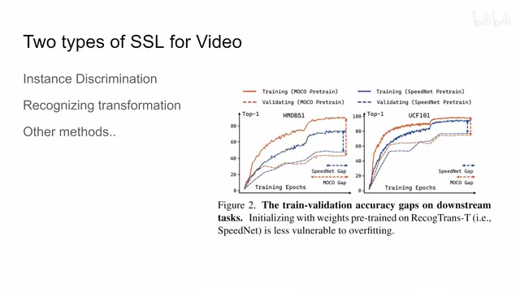
00:01:02–00:02:26 · 画面 006我让我这 classifier 去分辨这个 transformation，让它对这个 transformation 变得敏感，提高我们的性能那同时呢还有另一个方面的工作就是我们之前也介绍了很多这个 contrastive learning 对比学习的这些东西了那比如说 video 摸口那么这一类方法呢依赖于两个视频的片段他们的相互的这个对比在 latent space 里面假如说他们有相关联相关性那么他在这个 latent space 里面应该相互靠近否则呢应该相互远离等等那这一类的方法呢在这里做着叫这个 instance discrimination 这一类方法
那当然还有其他种类的对 Video 施加 Self-Supervised Learning 的方法呢在这里呢就不再涉及了那么在这篇文章的一开始呢作者首先对这两类方法中具有代表性的方法做了一个这个对比那比如说这两个数据集上他对比了这个 SpeedNet 和这个 Moco 他的一个结论是 Moco Petrine 的准确率很高但是他的 Validation 的准确率很低说明这个地方 Moco 可能是 overfit 了在这个 UCF-101 的数据集上也一样那这里呢，作者一个初步的结论就是说，我们的这个 recognizing transformation 这些方法呢，它呢可能更加不容易 overfit，这是作者的一个猜想，那么作者随即做了更多的实验啊，一组呢是跟这个语义信息相关的实验，比如说这个 video retrieval 还有这个 video recognition，对比了这个 transformation recognition 这一类的这个两种方法还有呢这个 instance discrimination 这一类的两种方法
00:02:26–00:03:51 · 画面 007
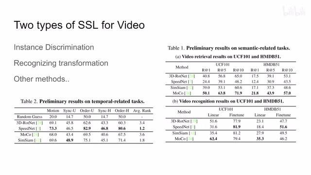
00:02:26–00:03:51 · 画面 007那可以看到呢这个在这个 Retrieval 上 Moco 是性能是最好的 Recognition 上呢不同的评价方法导致了它们各有不同但是我还是要说这个比较不是一个公平的比较嘛因为 SimSiam 还有 Moco 都是针对图像设计的你直接用到视频来做呢不是特别严格那当然这一块也不是作者的主要结论啊也无所谓那总之他想强调的呢是一种这个表现上的这个参差不齐啊那么再看这边这边还有这个 time for related task 跟这个时序相关的这个任务这个地方特别明显就是我说的这些 Moco 还有 SimSiam 他们都是针对图像设计的他们对这个时序的这个信息的把握呢可能就没有特别的好所以你看到在这些不同的这个 downstream task 不同的这个数据集上呢
我们这个 speednet 表现是相对较好的，那这个 rank 呢表示就是这不是有五个任务吗？那么每个任务里面这四种方法的排名，然后呢算个平均。那当然具体来说，这上面这个任务都是什么意思呢？这个-u 啊表示这个 UCF 数据集，这个-h 呢表示是 HMDB 数据集。那然后呢这几个任务包括这个 motion type，就是我们的这个任务。
00:03:51–00:04:21 · 画面 008
00:03:51–00:04:21 · 画面 008比如说它这个是一个线性的单向播放的任务，还是一个循环播放的任务？作者根据这个 motion 的 type 分了五类，做一个 classification 预测。然后还有这个 synchronization，那就是一个视频里面剪出两个片段来，然后这两个片段可能是同步的或者可能是错开了，比如说错开了四分之一。那这样呢，让我们 classifier 去分，比如说 A 视频是比 B 视频靠前了四分之一，靠前了二分之一，还是说这两个视频是同步了，或者 A 视频比 B 视频靠后了二分之一，还是靠后了四分之一这样子。那么这一类的任务呢叫做 synchronization。那么当然呢，还有这个 temporal order prediction 对吧？这个更简单了，就是两个视频谁在前谁在后。那么这三个任务呢，加上两个不同的数据集呢，就是这里汇报的五个不同的这个任务。
00:04:21–00:04:39 · 画面 009
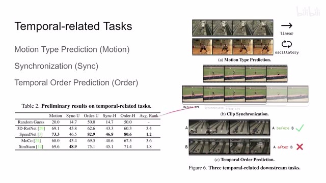
00:04:21–00:04:39 · 画面 00900:04:39–00:04:51 · 画面 010
00:04:39–00:04:51 · 画面 010这个是一个补充那么根据以上的这些初步的一个实验结果的观察作者有了一个什么结论呢他认为说这个 RecogTrans 就是 recognizing transformation 这类的方法或者是 instant discrimination 这类的方法他们擅长的领域是不一样的也就是说没有任何一个方法可以主宰所有的这个 benchmark
00:04:51–00:05:37 · 画面 011
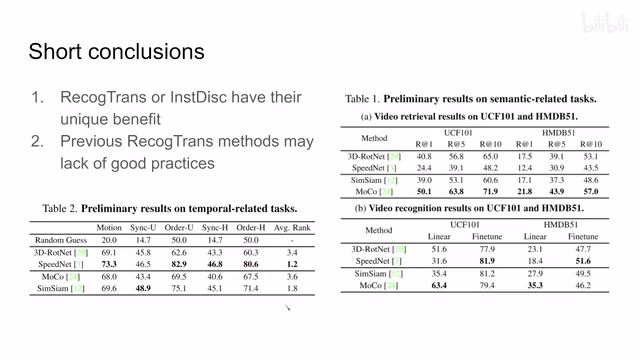
00:04:51–00:05:37 · 画面 011这当然是一个再正常不过的事情了,天下没有免费的午餐嘛,对吧?然后呢,他还说我们之前的这些 RecogTrans 这类的方法呢,他们并没有取得一个好的结果,是因为什么呢?他们的设计就是不到位,也就是说作者想要强调的是,如果我们能够精心的设计这一类任务的话,这一类任务的性能呢,也是很强的。那么在这些初始的这个观察的基础上呢,作者就开始了他自己的设计。
00:05:37–00:06:19 · 画面 012
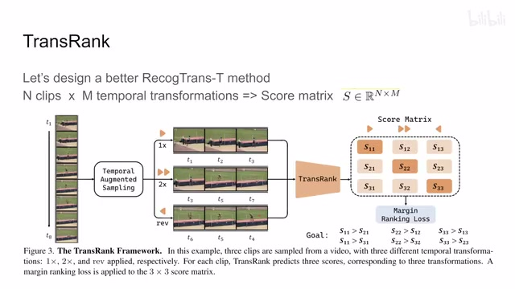
00:05:37–00:06:19 · 画面 012那么这里作者提出的方法呢叫做 trans rank 那么他的思路呢还是就是让我们的 classifier 去识别我们施加了什么样的 transformation 这样来获得一个好的 encoder 那这里呢他提了一个通用的框架就是我一个视频我能够采出 n 个这个小的 clips 然后呢假设我现在有应用了 m 种这个 temporal transformation就是在持续上各种 transformation 对吧？那么我就把这个 n 个视频放到这个 m pool 的 classifier 里面。那我就会得到一个 score matrix。这个 matrix 它的尺寸呢是 n 乘 m 的，就是每一个 clip 对每一个这个 transformation 它都有一个预测的分数。那么下面最重要的是为什么叫这个 trans rank 呢？就是因为它不像我们传统的训练 classification 用的 cross entropy 这种 loss。那这里呢作者用的是 margin ranking loss。
00:06:19–00:07:24 · 画面 013
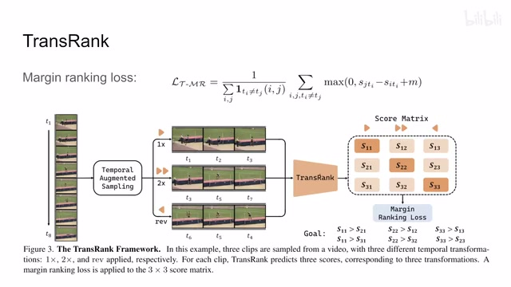
00:06:19–00:07:24 · 画面 013那比如说这里这是我正确的 transformation 对应的这个类别，那这边是不正确的错误的这个类别对吧？那我正确的这一类的这个得分应该大于我这个错误这一类别的这个得分。那可以看到这里我们这个 transformation 是这个 i 的时候，我如果预测出来的 g 它的这个得分如果比我们正确的这个得分减去这个 m 还要大的话。
那么这一项它就不是 0 了。它就要被我们记在这个 loss 当中了。那或者换句话来说。它其实就是一个 hinge loss希望维持我们正确的得分。始终比这些错误的不相关的得分。多出这个 m那这个就是作者想要使用的这个 margin ranking loss。那因为它很像排序的过程嘛。所以它叫做这个 trans rank也就像这里图示显示的一样。
正确的标记的得分呢。要大于这些不正确的标记的得分。那么当然我们也可以使用一个经典的。
00:07:24–00:09:24 · 画面 014
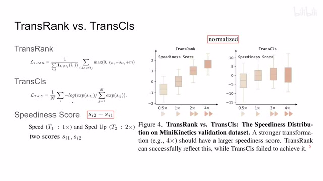
00:07:24–00:09:24 · 画面 014这个配置就是既然是 classifier 嘛我们就用 cross entropy 来搞一下这个 loss。那其实你想 cross entropy 也是对吧我们正确的得分要比这个其他的得分都要高。也是这么一个思路。只不过它就是具体的实现的方式。跟这个 ranking 这个 loss 是不一样的。那么为了对比这两种方法呢。
作者做了一个小的实验。就是我在这个 mini kinetics 上我的这个视频我就只用采出两种。这个 clips一种呢是元素的一种呢是两倍素的。然后呢我让我的 classifier 去预测。这个东西是元素的还是两倍素的。对吧那就是有两个 score 嘛因为两种 transformation 两个 score那就是二乘二的一个矩阵出来。
然后呢这里作者统计一个 speedness score。就是对于一个 clips 来说。它是两倍素的这个 score 减去它是一倍速的这个 score，那这个呢就是作者定义的这个 speediness score。那同时呢，他在测试的时候加入了这个模型从来没有见过的这个 4 倍速视频和 0.5 倍速视频。那么下面我们来看这个结果。首先他得到这个 speediness score 之后呢，把这个 score 这个 normalize 一下那经过这样 normalize 之后呢，它使得一倍速播放的这个视频的片段，它的这个平均的这个 speedness score 是 0，然后两倍速播放的这个视频的片段，它的平均的这个 speedness score 是这个 1 啊。那然后我们来看这个结果，那可以看到这个 transrank 的情况下呢，它训练出来的模型呢，首先 1 和 2 这个是 normalize 的
但是你如果看它 4 倍速的视频和 0.5 倍速的视频你可以发现它的 speediness score 能够反映出视频真实的播放的速度 4 倍速和 0.5 倍速都是从来没有见过的 TransRank 可以反映出来但是与之相对的这个 trans class 呢，它就没有这么敏感，说明这个 cross entropy 呢，它可能还真不适合我们当前的这个任务。那么到这里呢，我们初步决定了说以后要用这个 rank 这样的这个 loss，而不是这个 classification cross entropy 这样的 loss。那么下面呢，我们要决定的就是我们的这个 temporal transformation 里面，它这是一个集合嘛，我们应该把哪些 transformation 塞进去
00:09:24–00:09:36 · 画面 015
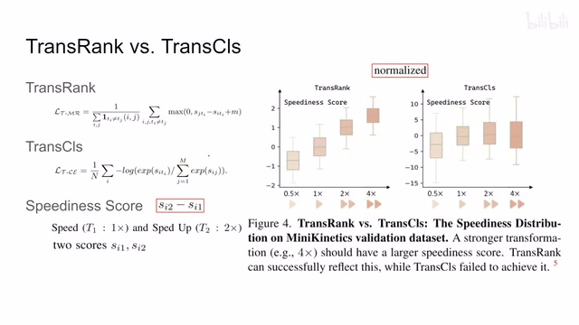
00:09:24–00:09:36 · 画面 01500:09:36–00:11:06 · 画面 016
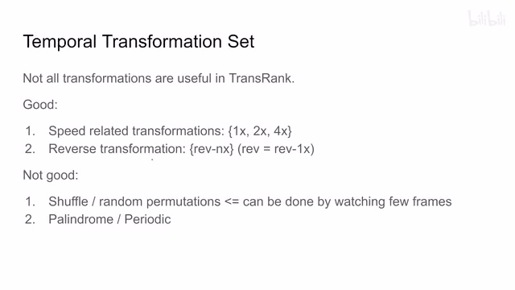
00:09:36–00:11:06 · 画面 016这里作者的一个观察就是，并不是所有的 transformation 都能够帮助我们的 transform。这里比较有帮助的包括 speed 相关的，就是最简单的按照不同的间隔均匀的在视频中采真。这里作者有一倍速、两倍速和四倍速的配置，当然也有反向的 transformation，这里就是 reverse nx n 的倍数，如果使用了 reverse 的话就表示正常的一倍速的倒放那作者发现这些东西呢，对我们的这个模型的性能呢是有帮助的，而没有帮助的部分呢，就像我们之前这个 RTT 文章里面这个展示的一样，一个是 shuffle 或者叫 random permutation，就是你把我们的这个真的顺序捣乱，然后呢让 classifier 来看。那这种任务为什么性能不好呢
作者一个猜测就是，因为我可能看了这个几帧，我随便看两帧我就知道这个视频就已经被杀户过了，已经被这个 permutation 过了。他很容易就得出结论了，所以这个模型就不会去看更多的帧去获得更多的信息了。这是一个猜测。那么相同的还有这个回文或者叫这个周期性，就是先正放再倒放这样一种配置等等。这些呢在本文的这个设计中呢并不是能够很有帮助那么以上呢就是这个 trans rank 在这个 temporal transformation 就是时序上的各种变化呢这些操作的细节了。那么当然呢也是闲着，也是闲着我们为什么不把这个 spatial 相关的这个 transformation 也一块做了呢？这里呢作者用了两种这个 transformation，一种呢是这个 aspect ratio，就是我们再去用这个 random crop 做这个 determination 的时候，把它变成不同的这个长宽比的视频
00:11:06–00:12:34 · 画面 017
00:11:06–00:12:34 · 画面 017那么这个长宽比呢，它其实也和速度类似，它是一个模拟量。那既然模拟量呢，我们一样可以像之前这个 trans rank 里面排速度一样，我也对它进行一个排序。那这里的这个排序呢，就更直接了，你可以看到呢，这里因为我们能够控制生成的这个长宽比它的这个具体的这个值嘛，我们至少知道谁的长宽比大谁的长宽比小嘛，所以呢这里直接用了一个排序的方法那更确切的来说呢，就是这个 RI 越小有这个 prime 表示我们的这个网络输出的这个 score 它呢也应该越小，反正就是给它俩绑定起来。那这个呢是这个 aspect ratio。那么当然同样的，我也可以做 rotation 对吧，作为一个 rotation 的任务来讲，你当然也可以用 classification 这样的 cross entropy 这样的 loss 来做，那么当然你也可以像本文中这样方法用这种 ranking 的 loss 来做，那都是一样的
最终我们的整个 loss 它就是一个合成这个是关于 temporal transformation 我去识别它产生的 loss，就是 transrank。然后还有这边就是我们上面的这些我去识别 spatial transformation 产生的这些 loss 给它一块加起来那就可以了。那么这个就是本文最终的一个设计。那么下面我们来看作者汇报的一些结果，首先是一些 evaluation
00:12:34–00:12:35 · 画面 018
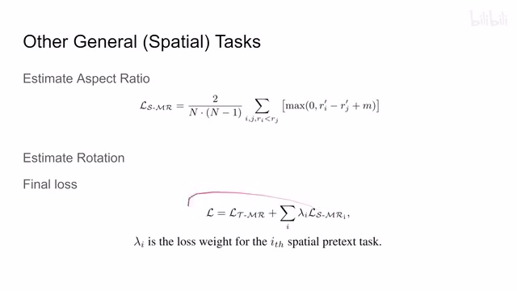
00:12:34–00:12:35 · 画面 01800:12:35–00:12:41 · 画面 019
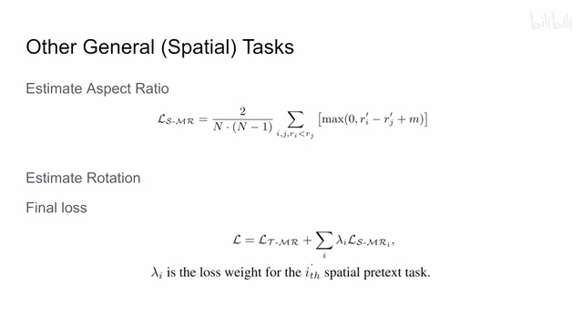
00:12:35–00:12:41 · 画面 01900:12:41–00:13:44 · 画面 020
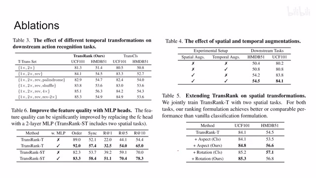
00:12:41–00:13:44 · 画面 020那这里首先探讨什么样的这个 temporal transformation 是对我们的这个识别性能有帮助的你可以看到呢这里是一倍两倍的正向播放和反向播放或者对这个 HMDB 来说是一倍两倍的正向播放和一倍四倍的反向播放啊等等等等那同时呢这个 trans rank 整体上是大于这个 trans classification 的那么再看下面这个原来是一层的这个 hide 现在变成了两层的这个 MLP肯定效果要好一些，这个没有什么。那这边呢是这个 spatial temporal 的 augmentation 嘛，也是符合直觉的结果。那么这个表格呢就是我们的这个 spatial transformation 它的意义了。你看到 aspect ratio 加起来还有这个 rotation 加起来那都是它们对这个性能的改进
同时 ranking loss 和 classification loss 来一对比的话特别是 aspect ratio 这方面用 ranking loss 会好一些那么这个是作者一些 ablation 当然还有作者汇报的一些主要的结果包括 video retrieval 对吧等等的这些主要的实验感兴趣的朋友可以到原文查看
00:13:44–00:14:27 · 画面 021
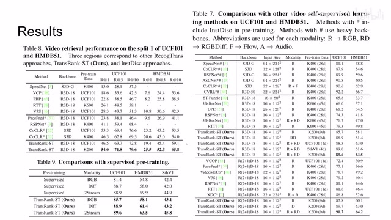
00:13:44–00:14:27 · 画面 021那总的来说呢，这篇就是重新回顾了一下这个 transformation awareness 或者叫 recognizing transformation 这一类的方法，就是让我们的这个 classifier 去识别我们施加了什么样的 transformation，用它作为一个辅助任务来帮助我们构建这个 self-supervised learning 整个这个系统。那么它的核心的贡献呢就是用这个 ranking 这种量的 loss 来替代我们原来常用的这个 cross entropy，取得了一个较为满意的结果
那么以上呢就是我对这个论文的一个快速的整理那么感谢您的收看再见
00:14:27–00:14:27 · 画面 022
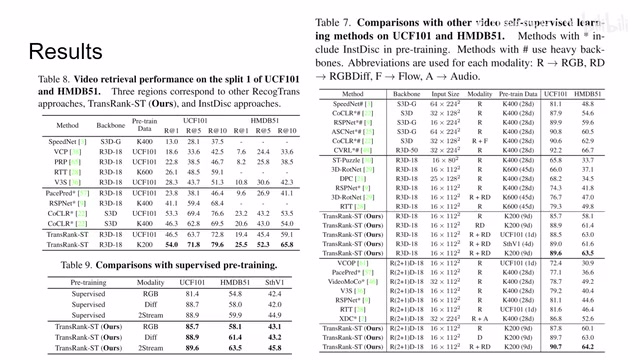
00:14:27–00:14:27 · 画面 022转写与来源说明 · 0 个自动复核提示
保留 74 个原始语音片段，0 个片段触发自动复核提示。提示仅用于定位可能的术语、重复或识别问题，不等于已确认错误。
讲解画面为源视频截图（640×360），不是可编辑 PPT 文件。全片按每秒 2 帧扫描内容变化，逐步展开页保留；连续动画保留代表画面。清晰度受源视频限制。
原视频：paper/合集_2026-10-16_表征学习/[论文简析]TransRank SS Video...Ranking-based Transformation Recognition[2205.02028].mp4
SHA-256：94f8cbad06d4b967dff48c34be3981407f8a171f8603eb1455fe8721db2da2ff
全文按视频语音与画面制作。原论文可从上方链接下载；完整资料包保留全文、原始逐字稿、字幕和校对记录。